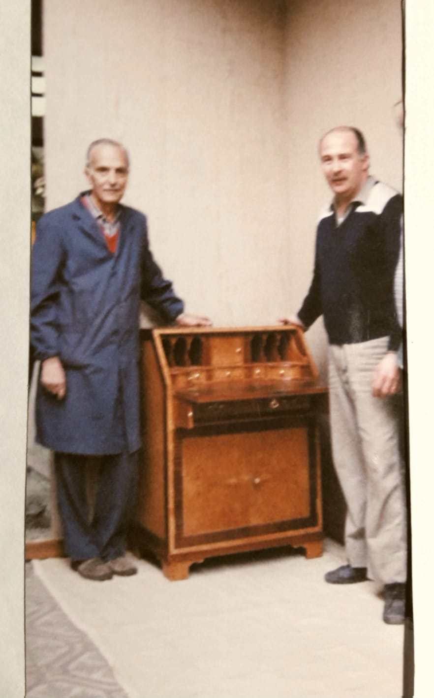

Sobre nosotros
Mi nombre es Miguel Angel Calogero fui Maestro jefe del curso de técnicas e industrias y diseño del mueble en las Escuelas Tecnicas Raggio,Profesor de tecnología de la madera e historia del mueble y realice trabajos de ebanistería y restauración en diversos talleres. Cuento con mas de 40 años de experiencia practica y 30 años siendo profesor. Soy un apasionado de los muebles y su historia, y me encantaria poder compartir con vos esa misma pasion que yo siento.
